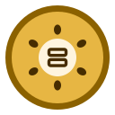
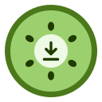
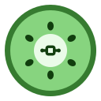
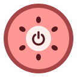
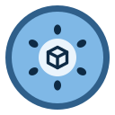
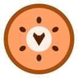
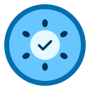
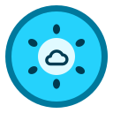
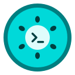
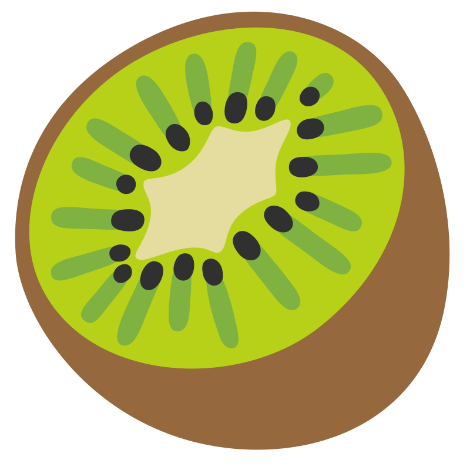

Open source · self-hosted · no accounts
Connect what is yours.
Kiwi Network is a family of open-source tools for connecting your machines, your people and your desktop, without a platform in between. A private WireGuard mesh built from one file, peer-to-peer tools that encrypt before anything leaves your device, and apps that install straight from git.







 The network
The network
One door in. Everything else behind it.
A Kiwi Network is a WireGuard mesh with one hub, the kiwi-master, the only machine that has to be reachable from the Internet. Nodes, laptops, phones and routers dial out to it and meet in the mesh. All of it is described in one file and built by kiwi-server.
- wg-easy WireGuard server · 10.8.0.1
- gluetun the master's own exit
- Pi-hole DNS for the mesh
- Tor SOCKS5 for mesh clients
- nginx admin pages, mesh only
- + relay & hub for your people
10.8.0.0/16 · everyone dials out-
1
Describe
Every host, its role and its disk in one
fleet.yaml. Passwords you leave out are generated from a seed. -
2
Build
kiwi-server build fleet.yamlAn unattended ISO per host: Fedora CoreOS, uCore or Debian. It wipes the disk you named and powers off.
-
3
Apply
kiwi-server apply fleet.yaml sh3The role arrives over SSH. Podman quadlets come up, and the apply fails loudly unless every container runs.
-
4
Run it
kiwi-server enroll fleet.yaml phone --qr kiwi-server status fleet.yamlAdd devices, read every machine's health, back up, unlock encrypted disks.
Client groups
Devices, guests, routers and a pentest group, each with its own reach. Guests see your services, not your network.
Names that can't leak
cloud.sh3.home: one resolver chain through the master, names under a domain that is never public, and your own CA.
Encrypted disks
LUKS on Debian and CoreOS, unlocked at boot by your own Tang rings, or by you over SSH into the initramfs.
Backups built in
restic to a backup node every night, append-only. The fleet itself is backed up, encrypted, to the nodes you name after every build.
Reboots in your window
Updates install continuously; machines reboot only when you said they may.
Proven on hardware
Booted end to end on VPSes, a mini PC and a VM, with a dead-node drill: back in about 14 minutes.
People
Your people, no platform in between.
Armory is a set of peer-to-peer web tools that run entirely in your browser and sync over nostr relays you choose. There is no sign-up and no server of ours, and everything private is sealed on your device before it leaves. It is built on kiwi-framework, and you can fork it into a hub for your own community.
Sealed in your browser
AES-256-GCM before anything leaves, private messages in NIP-17 gift wraps, and files encrypted with a key of their own. Relays store what they cannot read.
Local first
Every write lands on your device first, so the tools work offline, and a reconnecting device puts back whatever a relay forgot.
Your own hub
Fork Armory for your community, or run a private hub with its own relay on your kiwi-master, reachable from the mesh only.
Relays still see metadata (who writes when, from which IP), and calls reveal IPs to each other. The privacy model lists every limit.
The desktop
Apps from git, on an image-based desktop.
Built for Fedora Silverblue and Bluefin. kiwi-updater installs apps from open git catalogs: an app is a repo, a release is a tag. User apps go in your home; an app that needs root says why before it asks, and updates it without a password only when the release is signed.
curl -fsSL https://raw.githubusercontent.com/derlocke-ng/kiwi-updater/main/get-kiwi.sh | bash
kiwi-updater v2.4.0
Kiwi Apps: install, update, pin and diff apps from git catalogs. One user timer, signed releases for root.
ensconce v2.5.0
A fresh Bluefin-DX set up from plain list files. --export clones a machine.
kiwi-killswitch v0.2.3
A fail-closed VPN kill switch for GNOME: if the tunnel drops, nothing leaves.
gnome-monitor v0.3.2
Save and switch display layouts; hand a screen to another computer and get it back.

syncman v0.4.1
Two-way folder sync for game saves and more. rsync is the only dependency.

kiwi-cli-tools v1.2.1
torlink reaches a machine over Tor, plus pweb, select-server and tethering.
Kiwi Server v2.42.0
Build and run your network from a GTK app: live status, apply, unlock.

kiwi-gen web
SSH and TLS keys and certificates, made offline in your browser.
Many client networks
Ten clients, ten exits, zero mess.
Give each client's SOCKS5 endpoint its own sealed exit: a rootless container whose only route is that upstream. Your tools join the exit they need. Nothing runs that isn't in use, and the host's own network is never touched.
- kiwi-proxy exits and gateways, and a local SOCKS5 port per exit for any app
- kiwi-custodia distro boxes where everything leaves through the exit, from
dnfto static binaries - kiwi-fox browser profiles on an exit: Camoufox, Firefox or Tor Browser
- Tor & Mysterium modules for more exit IPs, handy for testing
Status
Where each piece stands.
Young projects, described as they are. A version means a release tag, which is what kiwi-updater installs.
| Repository | Release | Notes |
|---|---|---|
| Network | ||
| kiwi-server | v2.42.0 | Proven on hardware; federation, 5G phones and restoring a node's data not yet. |
| kiwi-modules · kiwi-stack | v0.23.0 · v0.5.0 | The renderer and the machine side, usable without a fleet. |
| People | ||
| kiwi-framework | v0.32.1 | Blog, approvals and NIP-07/46 signers still to come. |
| Armory | main | Live on GitHub Pages and as a container image. |
| Desktop | ||
| kiwi-updater | v2.4.0 | Signed releases for root; other apps' tags not signed yet. |
| kiwi-proxy · custodia · fox | v0.7.3 · v0.2.3 · v0.7.1 | TCP and IPv4 only; one VPN configuration per machine. |
| kiwi-plugin-tor · vpn · 9proxy · myst | v0.3 · v0.2 · v0.2 · v0.5 | Mysterium verified end to end; VPN and 9proxy not yet. |
| killswitch · ensconce · gnome-monitor · syncman · cli-tools | released | All in the Kiwi catalog. |